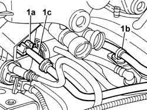
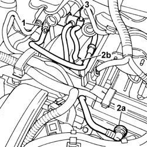
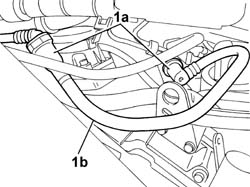
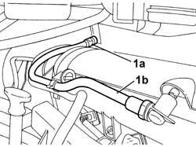

1040B32 FUEL FILLER PIPE UNION SLEEVE - R + R
- Path
- Procedures > 10 ENGINE > 1040 FUEL TANK AND PIPES > 1040B FUEL SUPPLY/RETURN CIRCUIT PIPE > 1040B32 FUEL FILLER PIPE UNION SLEEVE - R + R
- Kind
- repair procedure (removal / refitting; the operation number is the code)
- Applies to
- all engines; all production periods
- Interactive page
- https://sloeber94.github.io/elrnDB-fUlss/en/#/179006982
Applies to: engines: 3.0 24V V6; all production periods
 Removing
Removing
 Refitting
Refitting- Disconnect the negative battery terminal.
Description | Connector | |
|---|---|---|
. | Battery | A001B |
Op. 5010B18 CLIMATE CONTROL UNIT AIR INTAKE - R.R.
Op. 5050B34 WINDSCREEN WIPER ARM/S COMPLETE WITH BLADE - R+R
Op. 7210E22 WINDSCREEN BASE TRIM
See in Op. 1088B10
Op. 1016A42 LEFT HAND CYLINDER HEAD IGNITION COIL COVER - R+R
1. Release the supply pipe (1c) from the mounting clips (1a) and (1b).

Applies to: engines: 3.0 24V V6; all production periods
1. Disconnect the rapid connector for the front supply pipe from the pipe coming from the fuel tank.
2. Disconnect the rapid connector (2a) from the fuel pipe on the right head and the rapid connector (2b) from the fuel pipe on the left head.
3. Release the front fuel supply pipe complete with pressure regulator from the support on the timing belt cover.

Applies to: engines: 3.0 24V V6; all production periods
Refitting
Removing- Position the front fuel supply pipe complete with pressure regulator on the support on the timing belt cover.
- Connect the rapid connectors for the pipe to the fuel pipes on the left and right heads
- Connect the rapid connector to the fuel supply pipe coming from the tank.
- Refit the pipe in the fastening clips.
Op. 1016A42 LEFT HAND CYLINDER HEAD IGNITION COIL COVER - R+R
See in Op. 1088B10
Op. 7210E22 WINDSCREEN BASE TRIM
Op. 5050B34 WINDSCREEN WIPER ARM/S COMPLETE WITH BLADE - R+R
Op. 5010B18 CLIMATE CONTROL UNIT AIR INTAKE - R.R.
- Connect the negative battery terminal.
Description | Connector | |
|---|---|---|
. | Battery | A001B |
Applies to: engines: 2.0 16V JTD; all production periods
Removing
Refitting1. Disconnect the rapid connectors (1a) and remove the fuel supply pipe (1b).

Applies to: engines: 2.0 16V JTD; all production periods
Refitting
Removing- Position the front fuel supply pipe and connect the rapid connectors.
Applies to: engines: 2.0 16v; all production periods
Removing
Refitting1. Disconnect the rapid connectors (1a) and remove the front fuel supply pipe (1b).

Applies to: engines: 2.0 16v; all production periods
Refitting
Removing- Fit the front fuel supply pipe and connect the rapid connectors.
Applies to: engines: 2.2 16V JTD; all production periods
Removing
Refitting1. Disconnect the rapid connectors (1a) and remove the fuel supply pipe (1b).
Applies to: engines: 2.2 16V JTD; all production periods
Refitting
Removing- Position the front fuel supply pipe and connect the rapid connectors.
Topics linked from this page (5)
- 0010T21 ENGINE COOLANT - CHECK DENSITY AND CHANGE, IF NECESSARY
- 1016A42 LEFT HAND CYLINDER HEAD IGNITION COIL COVER - R+R
- 5010B18 CLIMATE CONTROL UNIT AIR INTAKE - R.R.
- 5050B34 WINDSCREEN WIPER ARM/S COMPLETE WITH BLADE - R+R
- 7210E22 WINDSCREEN BASE TRIM